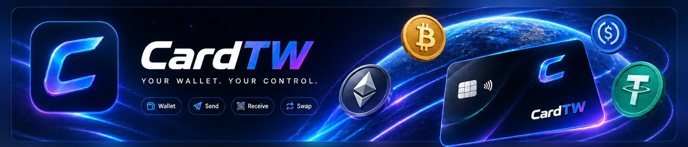
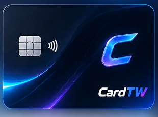
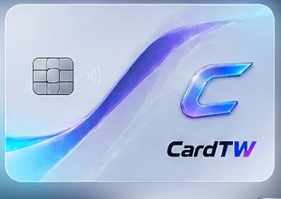
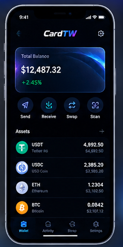

Connectez votre wallet
Ouvrez votre wallet compatible et approuvez la connexion. CardTW ne demande jamais votre clé privée.
Une interface claire et moderne pour visualiser vos cartes, connecter votre wallet et garder toutes vos fonctions au même endroit.

Une expérience pensée pour rester simple : connecter, choisir et utiliser.
Ouvrez votre wallet compatible et approuvez la connexion. CardTW ne demande jamais votre clé privée.
Consultez vos cartes et leurs informations depuis une interface claire et adaptée au mobile.
Lorsqu'une action nécessite une signature, la confirmation reste effectuée dans votre wallet.
Connexion non custodiale : vos clés restent dans votre wallet.
Une présentation simple, inspirée des interfaces fintech modernes.

Carte principale de votre espace.

Carte virtuelle pour vos usages en ligne.
Un espace personnel avec une hiérarchie visuelle simple, des actions accessibles et une navigation pensée pour mobile.

Le design reste volontairement léger pour mettre les actions importantes au premier plan.
Utilisez votre wallet compatible sans transmettre vos informations sensibles à l'interface.
Cartes, solde et actions regroupés dans une expérience cohérente sur ordinateur et mobile.
Les opérations sensibles passent par la confirmation de votre wallet avant exécution.
Les réponses essentielles pour utiliser l'interface.
Non. Cette interface ne demande ni clé privée ni phrase de récupération. Le wallet conserve les clés.
CardTW prépare la demande et le wallet affiche la confirmation à signer.
L'interface peut mémoriser l'adresse publique localement, mais la signature reste contrôlée par le wallet.
Historique local de démonstration.
La transaction sera préparée puis confirmée dans votre wallet.
Partagez cette adresse publique pour recevoir des fonds.
Action locale de démonstration.